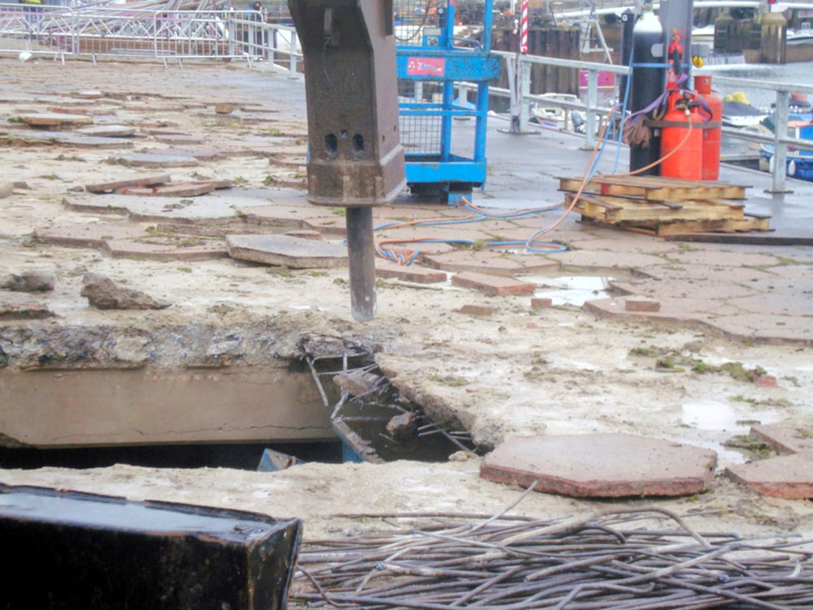

Phase 1 replaced the East Promenade deck above Torquay marina, keeping the main beams and columns beneath it.
- Client
- Torbay Council
- CASE role
- Design, details and tender documents
- Contract value
- £2.5m
Investigation showed that the deck and secondary beams had to be replaced, but that the main supporting beams and columns could be kept.
Hydro-demolition protected the existing reinforcement and limited dust beside the marina. New precast beams and deck units were tied together with in-situ concrete and a structural topping.

